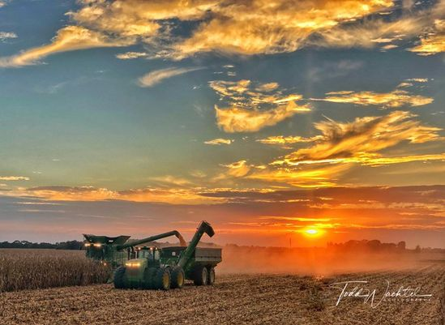

A Agronomia é a área profissional responsável pelo gerenciamento do cultivo agrícola e o conhecimento de questões relativas ao manejo do solo!
Qual é a função de um agrônomo? Um agrônomo é um profissional que atua na área da agricultura e possui conhecimentos específicos sobre plantas, animais, solos, clima e tecnologias relacionadas à produção agrícola. Ele trabalha em diferentes etapas do processo produtivo, desde o planejamento da produção até a colheita e pós-colheita dos produtos
